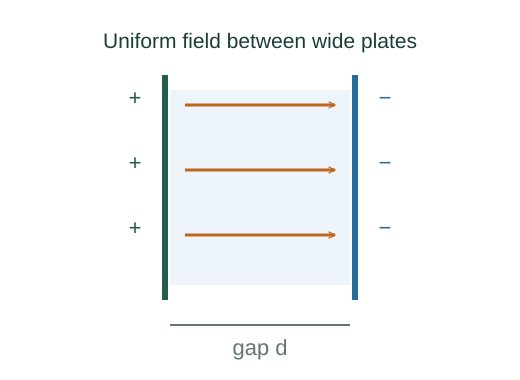

Derive parallel-plate capacitance
Capacitance relates the charge separated on two conductors to their potential difference. Parallel plates permit a direct derivation from their nearly uniform electric field.
What the symbols mean
Q > 0: charge magnitude on either plate; A: facing area; d: separation; ε: uniform filling-medium permittivity; C: capacitance (F).
When this applies
Large parallel conducting plates, d much smaller than lateral dimensions, negligible fringing, and a uniform linear dielectric filling the gap.
Developing the argument

Find the surface charge density
With charges +Q and −Q spread uniformly over the facing areas, the magnitude is σ = Q/A.
Find the field in the gap
The two plate fields add inside and approximately cancel outside. In vacuum E = σ/ε₀; a homogeneous linear dielectric replaces ε₀ by ε.
A closer lookWhy do two plate fields add to σ/ε₀? ↗Derive fields of an infinite line and sheetIntegrate field over separation
Because the gap field is approximately uniform, the magnitude of the potential difference is Ed.
Apply the definition of capacitance
Divide Q by ΔV. For this linear medium, charge cancels and the result depends on geometry and permittivity.
A worked example
Vacuum plates of area 0.010 m² separated by 1.0 mm have capacitance 8.85 × 10⁻¹¹ F, about 88.5 pF.
Derivation behind this calculation ↗A point to keep straight
At fixed battery voltage, adding a dielectric draws extra charge. For disconnected plates, charge stays fixed and voltage falls.
Check the assumptions and derivation ↗